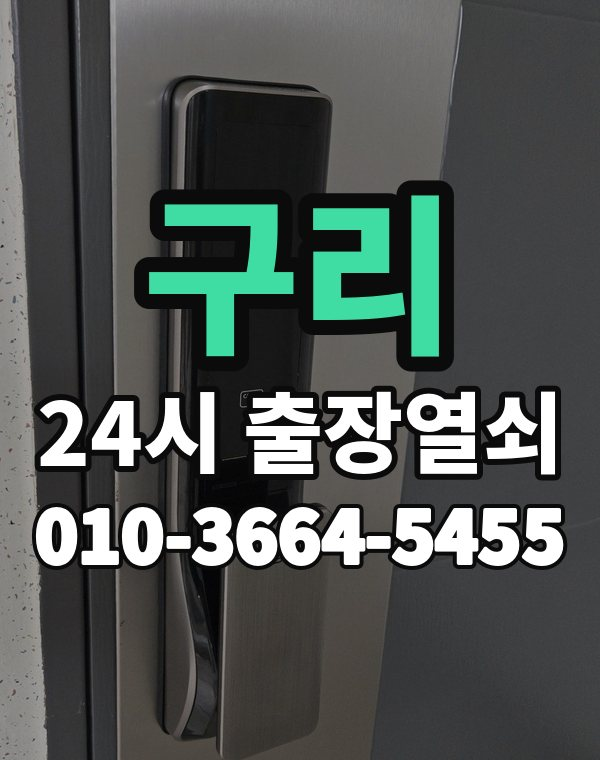

구리는 이런 곳입니다
구리는 인창, 교문동 아파트와 수택동 주택가, 갈매 새 아파트가 모여 있는 작은 도시입니다.
범위가 넓지 않아 위치만 알려주시면 빨리 갑니다.

구리시 출장 가는 동네
- 인창동
- 교문동
- 수택동
- 갈매동
- 토평동
- 아천동
인창동 출장열쇠, 교문동 열쇠집처럼 동네 이름으로 찾으셨어도 같은 곳입니다.
적혀 있지 않은 동네도 구리시 안이면 다 갑니다.
구리에서 하는 일
구리 출장, 이렇게 알려주세요
수택동 주택가는 건물 이름을 같이 알려주세요.
구리역 주변 상가 출입문도 출동합니다.
구리역, 갈매역, 인창동 근처라고 말씀해 주셔도 위치 잡기가 쉬워집니다.
가까운 역이나 큰 건물, 단지 이름을 같이 알려주세요.
- 정확한 주소, 아파트라면 동과 호수
- 번호판 상태 (꺼짐, 켜짐, 경고음)
- 거주 확인용 신분증이나 주소 나온 우편물
전화부터 작업까지 순서는 이용안내에 적어 두었습니다.
구리 출장열쇠 관련 글
- 구리 아천동 늦은 밤 퇴근길 현관문 안 열릴 때 심야 출장열쇠 부르는 법과 준비할 것
- 구리 갈매동 새 아파트 스마트 도어락 고르는 법 지문 카드 번호 방식 비교와 설치 전 확인
- 구리 교문동 이사 후 도어락 비밀번호 초기화 재설정 방법과 출장열쇠 도움받는 순서
- 구리 인창동 도어락 배터리 방전 번호판이 꺼졌을 때 출장열쇠 부르기 전 대처법
- 구리 수택동 오래된 주택 현관문 문틀 처짐 경첩 문제로 안 열릴 때 출장열쇠 점검
- 구리 토평동 택배 받으러 나갔다 문이 잠겼을 때 현관문 출장열쇠 부르기 전 확인
구리 출장열쇠 자주 묻는 질문
구리 어느 동네까지 오시나요?
인창동, 교문동, 수택동, 갈매동, 토평동, 아천동 등 구리시 전 지역 갑니다. 구리시 안이라면 동네 상관없이 갑니다.
구리 늦은 시간 출장도 되나요?
24시간 전화 받고 출동합니다. 위치를 알려주시면 도착 예상 시간을 먼저 말씀드립니다.
문을 못 열면 비용을 내나요?
못 열면 받지 않습니다. 얼마인지는 손대기 전에 먼저 말씀드립니다.
집주인이 아니어도 열어 주나요?
사시는 분이 맞는지만 확인되면 됩니다. 신분증이나 우편물을 준비해 주세요.
구리에서 도어락 고장도 봐주시나요?
네, 문 열기와 함께 도어락 수리, 설치, 교체도 합니다. 고쳐서 되면 교체는 권하지 않습니다.